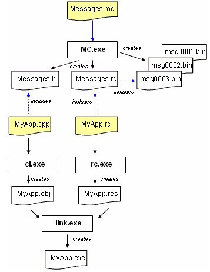

US36474 Sign Service Error Code Unify¶
Webex Error Code¶
How message compiler work¶

WebEx Env¶
- WebexCI
- Edit start meeting method
- Webex Administration
- Common Site Settings => Primary client download method
- Enable URL protocol
Test Case¶
- URL Protocol
“C:\ProgramData\WebEx\webex.exe” “wbx:DocShow:W1dlYkV4XQ0KRW5hYmxlTXVsdGlDbGllbnRWZXJzaW9uPXRydWUNCkdwY01vdmluZ0luU3ViZGlyPVdhbnRhDQpHcGNTaXRlRG9tYWluPWdvLndlYmV4LmNvbQ0KY2xpZW50U3RhbmRieT0xDQp1cmxyb290PWh0dHBzOi8vYWthbWFpY2RuLndlYmV4LmNvbS9jbGllbnQvV0JYY2xpZW50LTMzLjMuNS00L3dlYmV4L3NlbGYNCnRyYWNraW5nU2Vzc2lvbklEPUU2RjA1RTdGRUI3NzQ2NzJBOEYzRTcxMkNBRjJFRDVFDQpwcm9kdWN0bmFtZT1tYw0KQ2xpZW50QnVpbGRWZXJzaW9uPU16TXVNeTQxTGpRPQ0KZ3BjZGVjdmVyPTI3LCAxNywgMjAxNywgMzE3DQpncGNleHR2ZXI9MTAwMzMsIDMsIDIwMTgsIDYxNA0KR3BjRG93bmxvYWRPbmx5PTENCmxvY2Fscm9vdHNlY3Rpb252ZXI9V2ViRXhcVDMzX1VNQw0K”
- T2
- “C:\Users\lawen\AppData\Local\WebEx\webex.exe” “wbx:test”
- “C:\Users\lawen\AppData\Local\WebEx\webex.exe” “wbx:,go,102578488825919747,491443592,MC,1-1-0,SDJTSwAAAAcc_OYH2TmU_knNXQ6uAWFyhjOzLsyOVJIxkeSSeySlkw2_webex.exe”
FQA¶
- Where is the mc.exe
- Win10
- C:\Program Files (x86)\Windows Kits\8.1\bin\x64\mc.exe
- To compile the message text file, use the following command:
- mc -U provider.mc
- To compile the resources that the message compiler generated, use the following command:
- rc provider.rc
Reference¶
- How to use Message Compiler (MC.exe)
- Configure the message compiler (mc.exe) as a custom compiler
- Windows Event Log
- How to verify the digital signature of a file
- https://blogs.msdn.microsoft.com/winsdk/2013/08/07/using-winverifytrust-api-to-verify-the-embedded-signature-of-a-file-or-fall-back-to-catalog-signature-verification/
- https://social.technet.microsoft.com/Forums/en-US/cf474fc3-c081-4e30-80c0-edae3f675378/howto-verify-the-digital-signature-of-a-file?forum=windowsdevelopment
- https://www.winehq.org/pipermail/wine-patches/2008-December/066559.html